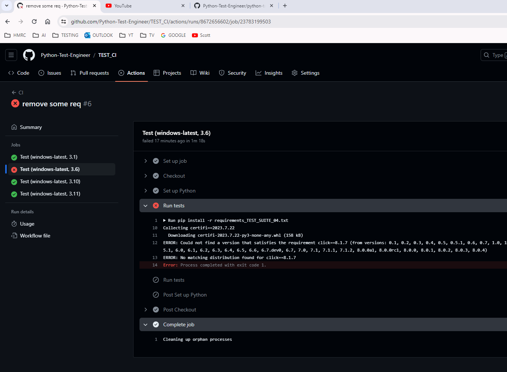

CI Integration¶
One way to test one's code on many versions of python and operating systems is to use GitHub actions.
We can use a GitHyb workflow using .github/workflows/some_actions.yaml in our project.
In TEST_04_CI, we use a file called ci_test.yaml but it can be any named yaml file.
This suite uses the TEST__00_MINIMAL with some project packages removed.
One can see that running this just on windows in the GitHub actions, highlights and error on Python 3.6.

We can extend to use Ubuntu and MacOS.
This is an adaptation of Carberra
Installation tips:
I would suggest extracting the TEST_04_CI folder to its own location and set up a new repository so that once can test these github actions.
- create new CI_TEST repo for example.
- copy folder to its own location so that one can do
git initetc and then connect to the CI_TEST repo. - once you push up code to repo, the GitHub actions will start as the yaml file has